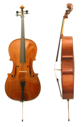

The cello or violoncello is a bowed string instrument with four strings tuned
in perfect fifths. The strings from low to high are generally tuned to C2, G2,
D3 and A3, an octave lower than the viola. It is a member of the violin family
of musical instruments, which also includes the violin and viola.
The cello is used as a solo musical instrument, as well as in chamber music
ensembles, string orchestras, as a member of the string section of symphony
orchestras, and some rock bands.
It is the second-largest bowed string
instrument in the modern symphony orchestra, the double bass being the largest.
Cellos were derived from other mid- to large-sized bowed instruments in the 16th
century, such as the viola da gamba, and the generally smaller and squarer viola
da braccio, and such instruments made by members of the Amati family of
luthiers.
Cello parts are generally written in the bass clef, but both tenor and treble
clefs are used for higher-range parts.
A person who plays the cello is called a cellist or violoncellist.
The name cello is a contraction of the Italian violoncello, which means "little
violone". The violone was the lowest-pitched instrument of the viol family, the
group of stringed instruments that went out of fashion around the end of the
17th century in most countries except France, where they survived another
half-century before the louder violin family came into greater favour in that
country as well. In modern symphony orchestras, it is the second largest
stringed instrument (the double bass is the largest).
Thus, the name
"violoncello" contained both the augmentative "-one" ("big") and the diminutive
"-cello" ("little"). By the turn of the 20th century, it had become common to
shorten the name to 'cello, with the apostrophe indicating the missing stem. It
is now customary to use "cello" without apostrophe as the full designation. Viol
is derived from the root viola, which was derived from Medieval Latin vitula,
meaning stringed instrument.
Description:
Cellos are tuned in fifths, starting with C2 (two octaves below middle C),
followed by G2, D3, and then A3. It is tuned in the same intervals as the viola,
but an octave lower. Unlike the violin or viola but similar to the double bass,
the cello has an endpin that rests on the floor to support the instrument's
weight.
The cello is most closely associated with European classical music, and has been
described as the closest sounding instrument to the human voice. The instrument
is a part of the standard orchestra and is the bass voice of the string quartet,
as well as being part of many other chamber groups. A large number of concertos
and sonatas have been written for the cello.
Among the most well-known Baroque works for the cello are Johann Sebastian
Bach's six unaccompanied Suites. The Prelude from the First Suite is
particularly famous.
From the Classical era, the two concertos by Joseph Haydn
in C major and D major stand out, as do the five sonatas for cello and
pianoforte of Ludwig van Beethoven, which span the important three periods of
his compositional evolution. Romantic era repertoire includes the Robert
Schumann Concerto, the Antonín Dvořák Concerto as well as the two sonatas and
the Double Concerto by Johannes Brahms.
Compositions from the early 20th century
include Edward Elgar's Cello Concerto in E minor, Claude Debussy's Sonata for
Cello and Piano, and unaccompanied cello sonatas by Zoltán Kodály and Paul
Hindemith. The cello's versatility made it popular with composers in the mid- to
late-20th century such as Sergei Prokofiev, Dmitri Shostakovich, Benjamin
Britten, György Ligeti, Witold Lutoslawski and Henri Dutilleux, encouraged by
soloists who specialized in contemporary music (such as Siegfried Palm and
Mstislav Rostropovich) commissioning from and collaborating with composers.

The cello is increasingly common in traditional fiddle music, especially
Scottish fiddle music. Well known players include Natalie Haas, Mike Block and
Liz Davis Maxfield.
Today the instrument is less common in popular music, but was commonly used in
1970s pop and disco music. Today it is still sometimes featured in pop and rock
recordings, .
The cello has
also recently appeared in major hip-hop and R & B performances, such as singers
Rihanna and Ne-Yo's performance at the American Music Awards. The instrument has
also been modified for Indian classical music by Nancy Lesh and Saskia Rao-de
Haas.
The direct ancestor to the violoncello was the bass violin. Monteverdi referred
to the instrument as "basso de viola da braccio" in Orfeo (1607). Although the
first bass violin, possibly invented as early as 1538, was most likely inspired
by the viol, it was created to be used in consort with the violin.
The bass
violin was actually often referred to as a "violone", or "large viola", as were
the viols of the same period. Instruments that share features with both the bass
violin and the viola da gamba appear in Italian art of the early 16th century.
The invention of wire-wound strings . around 1660 in Bologna, allowed for a
finer bass sound than was possible with purely gut strings on such a short body.
Bolognese makers exploited this new technology to create the cello, a somewhat
smaller instrument suitable for solo repertoire due to both the timbre of the
instrument and the fact that the smaller size made it easier to play virtuosic
passages.
This instrument had disadvantages as well, however. The cello's light
sound was not as suitable for church and ensemble playing, so it had to be
doubled by organ, theorbo or violone.
Around 1700, Italian players popularized the cello in northern Europe, although
the bass violin (basse de violon) continued to be used for another two decades
in France.
Many existing bass violins were literally cut down
in size to convert them into cellos according to the smaller pattern developed
by Stradivarius, who also made a number of old pattern large cellos (the
'Servais'). The sizes, names, and tunings of the cello varied widely by
geography and time.The size was not standardized until around 1750.
Despite similarities to the viola da gamba, the cello is actually part of the
viola da braccio family, meaning "viol of the arm", which includes, among
others, the violin and viola. Though paintings like Bruegel's "The Rustic
Wedding", and Jambe de Fer in his Epitome Musical suggest that the bass violin
had alternate playing positions, these were short-lived and the more practical
and ergonomic a gamba position eventually replaced them entirely.
Baroque era cellos differed from the modern instrument in several ways. The neck
has a different form and angle, which matches the baroque bass-bar and
stringing. Modern cellos have an endpin at the bottom to support the instrument
(and transmit some of the sound through the floor),while Baroque cellos are held
only by the calves of the player.
Modern bows curve in and are held at the frog;
Baroque bows curve out and are held closer to the bow's point of balance. Modern
strings normally have a metal core, although some use a synthetic core; Baroque
strings are made of gut, with the G and C strings wire-wound. Modern cellos
often have fine-tuners connecting the strings to the tailpiece, which make it
much easier to tune the instrument, but such pins are rendered ineffective by
the flexibility of the gut strings used on Baroque cellos.
Overall, the modern
instrument has much higher string tension than the Baroque cello, resulting in a
louder, more projecting tone, with fewer overtones.
Few educational works specifically devoted to the cello existed before the 18th
century, and those that do exist contain little value to the performer beyond
simple accounts of instrumental technique. One of the earliest cello manuals is
Michel Corrette's Méthode, thèorique et pratique pour apprendre en peu de temps
le violoncelle dans sa perfection